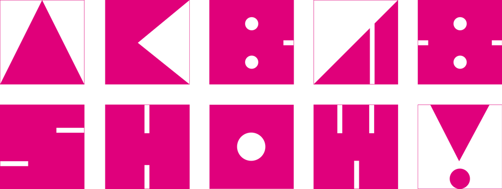
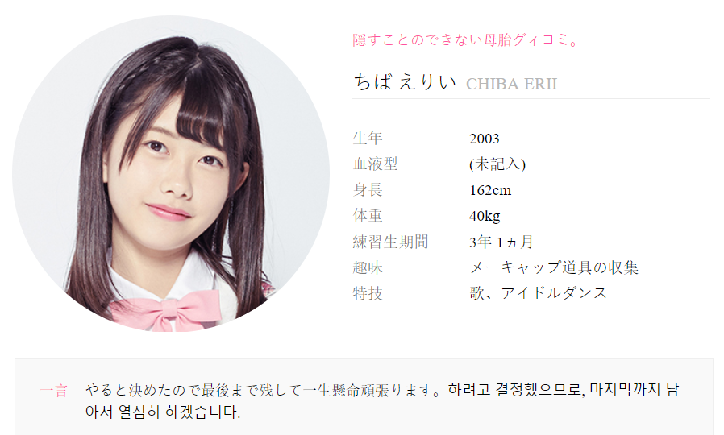

Career & History
Erii Official debuted with AKB48 in May of 2015. After she was eliminated from Produce 48 She returned to the group to continue her activities.
In 2019, Erii was a part of a show called UHSN that had girls from different countries live the K-pop idol life and make a temporary debut under the same stage name

Chiba Erii (치바 에리이; ちば えりい) is currently an AKB48 member. She was a competitor on Produce 48. However, she ranked #33 on episode 8 and was eliminated.
